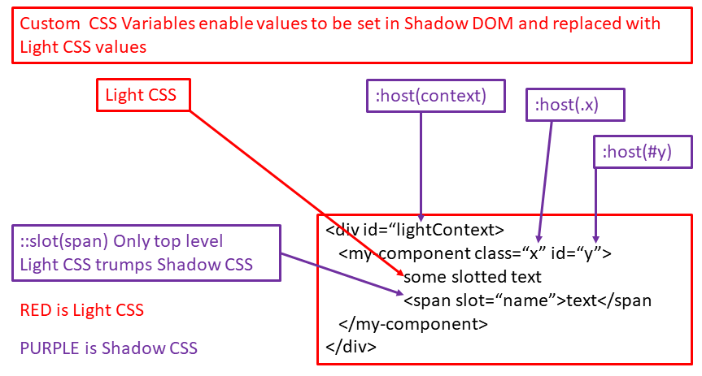

css-05-host-context
We can change the styling of the component based on the context of the host, which in this case is div#showContext

Add id="showHost" to page level component.
The host(#showHost) now takes precedence only because it is listed after host-context() in style.
Move the host(#showHost) above :host-context a (or remove it) and you will see that the color goes back to pink.
Thus host styling is just like CSS styling using cascading rules.